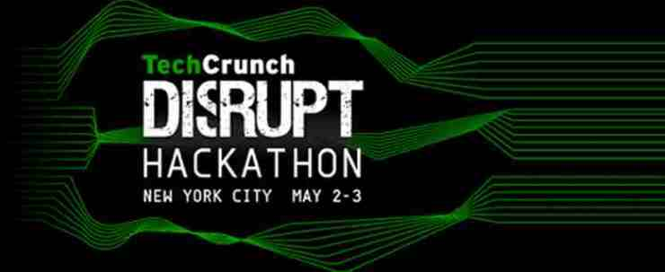
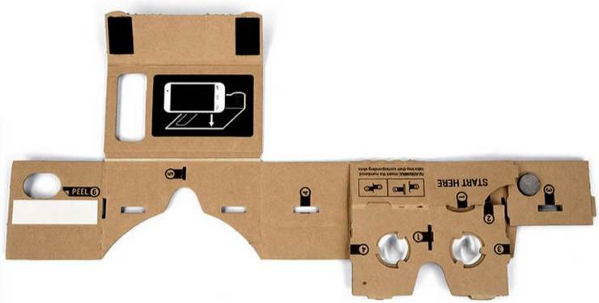

Winner of the Tech Crunch Disrupt 2015 Hackathon - Virtual Reality Map Explorer
Tech Crunch Disrupt 2015 Hackathon lasted 21 hours had 106 entrants and over 20 sponsors

Our team’s submission Virtual Reality Map Explorer won a prize from Esri (click play below)
ESRI Environmental Systems Research Institute is an international supplier of Geographic Information System software, web GIS and geodatabase management applications
Virtual Reality Map Explorer was built using Google Cardboard for Android phones



Esri API1
2
3
4
5
6
7
8
9
10
11
12
13
14
15Runnable task = new Runnable() {
public void run() {
try {
String[] queryArray = {
"http://services.arcgisonline.com/" +
"ArcGIS/rest/services/Demographics/" +
"USA_Average_Household_Size/MapServer/3",
"AVGHHSZ_CY > 3.5"};
AsyncQueryTask asyncQuery = new AsyncQueryTask();
asyncQuery.execute(queryArray);
} catch (Exception e) {
e.printStackTrace();
}
}
};
Esri API Data Parameters (excerpt)1
2
3
4
5
6
7
8
9
10
11
12
13
14
15
16
17
18TOTPOP_CY Total Population
HHPOP_CY Population in Households
FAMPOP_CY Population in Families
GQPOP_CY Population in Group Quarters
POPDENS_CY Population per Square Mile
DIVINDX_CY Diversity Index
TOTHH_CY Total Households
AVGHHSZ_CY Average Household Size
FAMHH_CY Total Family Households
AVGFMSZ_CY Average Family Size
MEDHINC_CY Median Household Income
AVGHINC_CY Average Household Income
PCI_CY Per Capita Income
TOTHU_CY Total Housing Units
OWNER_CY Owner Occupied Housing Units
RENTER_CY Renter Occupied Housing Units
VACANT_CY Vacant Housing Units
MEDVAL_CY Median Value of Owner Occupied Housing
Cardboard API1
2
3
4
5
6
7
8
9
10
11
12public void onDrawEye(Eye eye) {
glClearColor(0.5f, 0.8f, 0.9f, 1.0f);
glClear(GL_COLOR_BUFFER_BIT | GL_DEPTH_BUFFER_BIT);
multiplyMM(view, 0, eye.getEyeView(), 0, camera, 0);
multiplyMV(lightPosInEyeSpace, 0, view, 0, LIGHT_POS_IN_WORLD_SPACE, 0);
float[] perspective = eye.getPerspective(Z_NEAR, Z_FAR);
multiplyMM(modelView, 0, view, 0, modelFloor, 0);
multiplyMM(modelViewProjection, 0, perspective, 0, modelView, 0);
drawGround();
drawDemographicOverlay();
}
Ground Vertex Shader1
2
3
4
5
6
7
8
9
10
11
12
13
14uniform mat4 u_MVPMatrix;
uniform mat4 u_MVMatrix;
attribute vec4 a_Position;
attribute vec2 a_TexCoordinate;
varying vec3 v_Position;
varying vec2 v_TexCoordinate;
void main() {
v_Position = vec3(u_MVMatrix * a_Position);
v_TexCoordinate = a_TexCoordinate;
gl_Position = u_MVPMatrix * a_Position;
}
Ground Fragment Shader1
2
3
4
5
6
7
8
9
10
11
12uniform vec3 u_LightPos;
uniform sampler2D u_Texture;
varying vec3 v_Position;
varying vec2 v_TexCoordinate;
void main() {
float distance = length(u_LightPos - v_Position);
vec3 lightVector = normalize(u_LightPos - v_Position);
gl_FragColor = texture2D(u_Texture, v_TexCoordinate);
}
References and Resources
TechCrunch Disrupt NY 2015 Hackathon
http://techcrunch.com/events/disrupt-ny-hackathon-2015/
VR Map Explorer
http://challengepost.com/software/arcvrcardboard
https://github.com/skylight1/VR-Map-Explorer
Esri
https://developers.arcgis.com/android/
https://developers.arcgis.com/android/api-reference/reference/packages.html
Google Cardboard
https://www.google.com/get/cardboard/


")